Explore Braga
A Brief History
Braga claims descent from the Roman city of Bracara Augusta and has served for centuries as the ecclesiastical capital of northern Portugal. Its archbishops sponsored baroque churches, the terraced Bom Jesus sanctuary, and seminary buildings that still dominate the hillscape. Medieval and eighteenth-century houses line a centre that remained largely inland from Atlantic trade yet shaped religious education, law, and provincial administration across the Minho region.
Attractions Map
Top Sights & Activities
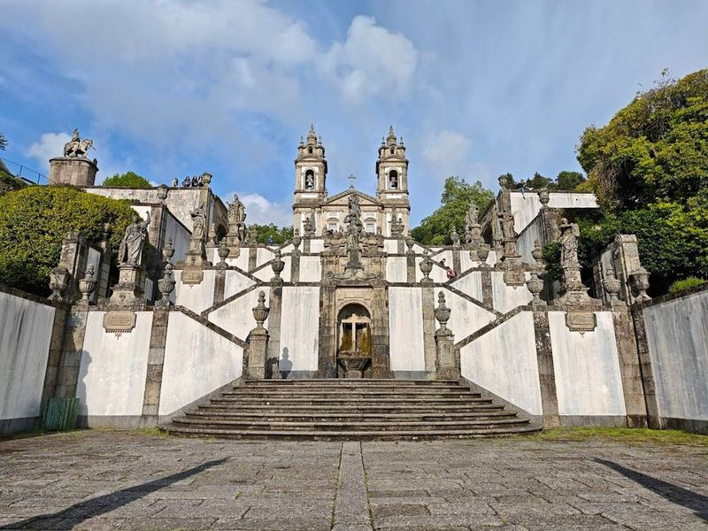
Bom Jesus do Monte
Bom Jesus do Monte is a renowned sanctuary and pilgrimage destination located on a hill near Braga, Portugal. This UNESCO World Heritage site features a neoclassical church, exhibition, and picturesque wooded gardens. The highlight of the sanctuary is the grand Baroque stairway leading to the Church of Bom Jesus do Monte. travellers can ascend the 577 steps or opt for a scenic ride on the water-powered funicular. The site also offers an elevator for easy access.
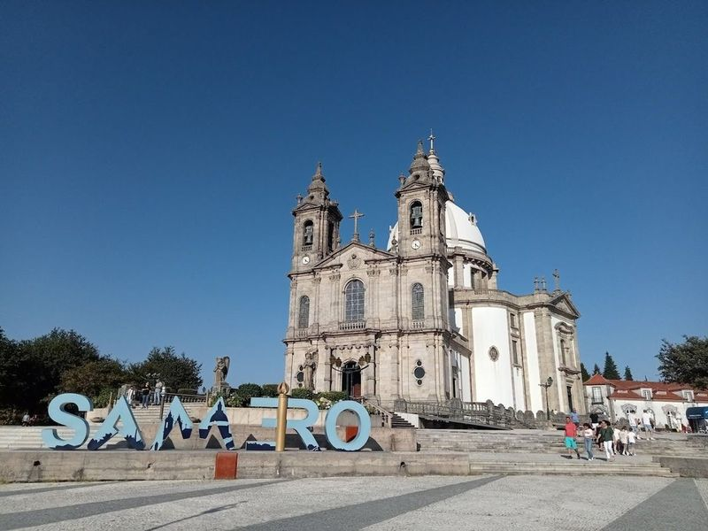
Sanctuary of Our Lady of Sameiro
Perched atop a 566-meter high hill near Braga, the Sanctuary of Our Lady of Sameiro is a significant Catholic pilgrimage site in Portugal. It is the country's second most important sanctuary dedicated to the Virgin Mary after Fatima. The sanctuary, founded in the 18th century and later expanded with a chapel and basilica, draws crowds of pilgrims who gather to honor the Virgin Mary every year on the first Sunday of June.
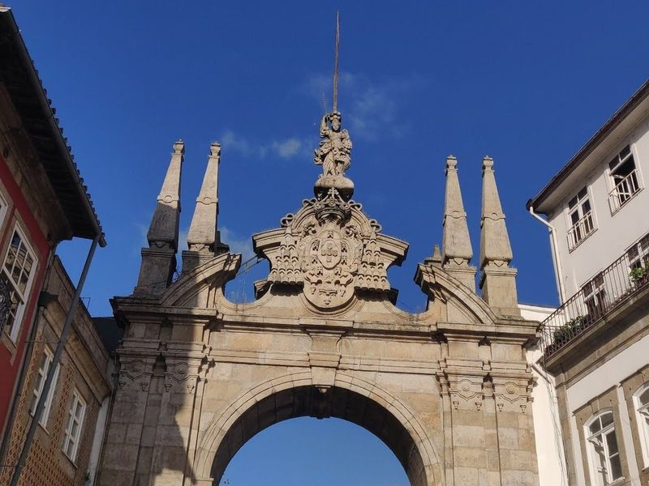
Arco da Porta Nova
The Arco da Porta Nova is a significant landmark in Braga, Portugal. This pedestrian entrance arch showcases baroque and neoclassical details, representing the city's rich history. travellers can take a leisurely stroll through the historic center to explore various churches, historical buildings like Palacio do Raio and Theatro Circo, and enjoy a coffee at Brasileira with views of Avenida Central.
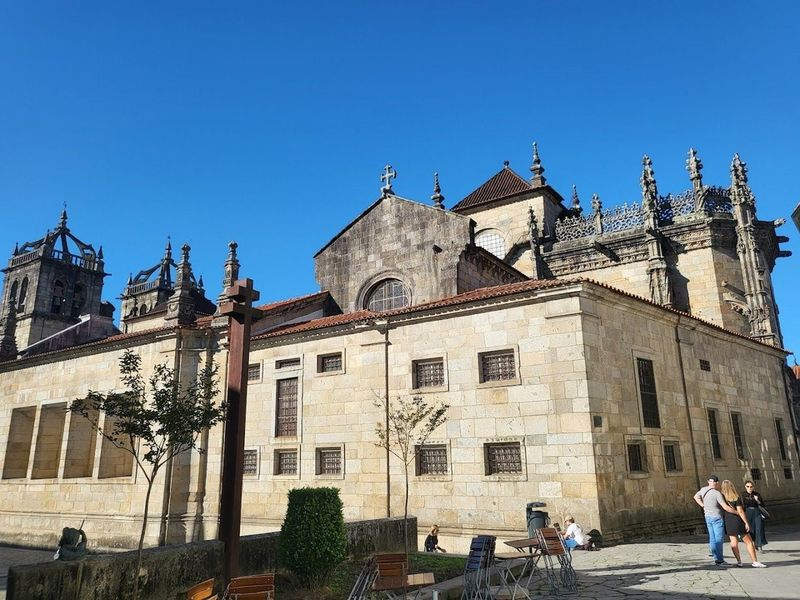
Santa Maria de Braga Cathedral
Santa Maria de Braga Cathedral, a significant monument in Portugal, was constructed over several centuries and showcases a blend of architectural styles including late Gothic and Baroque. Designated as a national monument since 1910, the cathedral holds a rich history dating back to the 11th century. Despite numerous renovations, traces of its various periods can still be observed within its walls. In Braga, this captivating site is not to be missed on any travel itinerary.
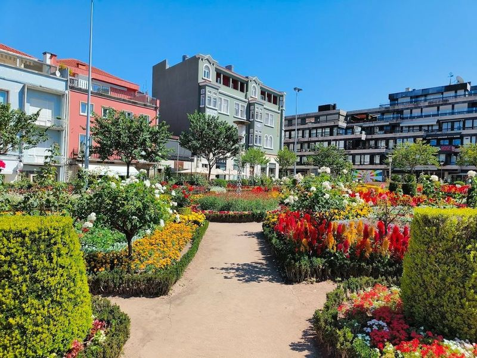
Santa Barbara Garden
Santa Barbara Garden is a charming flower garden located in the historic center of Braga. It features a central fountain with a statue of Saint Barbara and paths lined with benches, overlooked by the medieval wing of the Episcopal Palace. The garden offers a peaceful retreat for travellers to stroll, relax on benches, and admire its well-maintained flowers. Additionally, it provides an opportunity to enjoy the surrounding green areas such as Bom Jesus Natural Park and freshwater inland beaches.
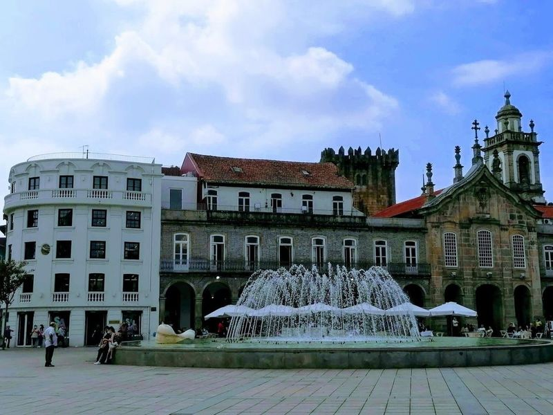
Braga Tower
Braga Tower, also known as Torre de Menagem, is a significant historic landmark located behind Republic Square. Standing at 30 meters high, it is the last remaining structure of the 13th-century fortified castle that was demolished in the early 20th century. travellers can explore a free museum inside the tower which provides insights into its history and that of the city. The museum features graphic panels depicting life during Roman times and beyond.
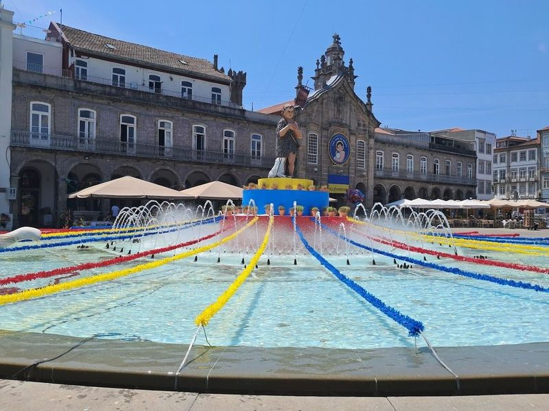
Chafariz da Praça da República
Chafariz da Praça da República is a charming spot in Braga, offering outdoor activities suitable for all ages. The area is surrounded by numerous cafes where travellers can enjoy a meal while soaking up the atmosphere. The fountain itself is quite picturesque and adds to the allure of the place. Situated centrally, it serves as a meeting point with paths crossing through it. During Christmas, the square is beautifully decorated, but it remains popular throughout the year.
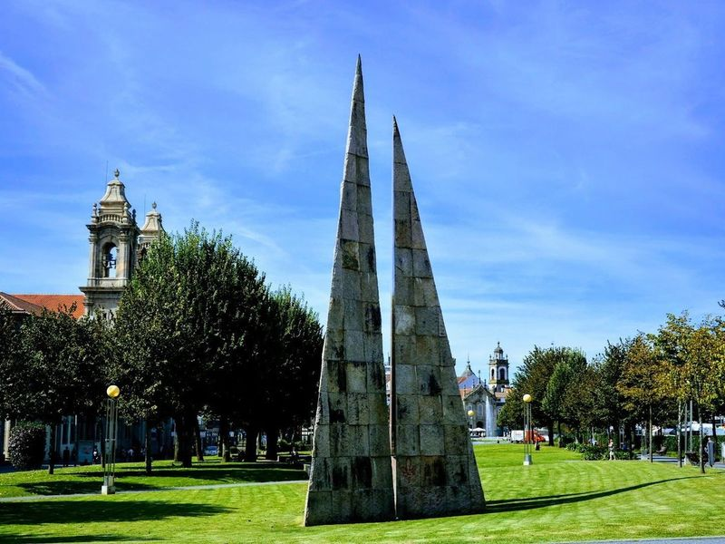
Park Avenida Central
Park Avenida Central is a well-maintained and emblematic park located in Braga, Portugal. It is situated along one of the city's main arteries and features meticulously cared for gardens with intricate details. The park is home to notable landmarks such as the bandstand from the 19th century, the Monument to the Combatants of the Great War, and the Evocative Monument to Pope John Paul II.
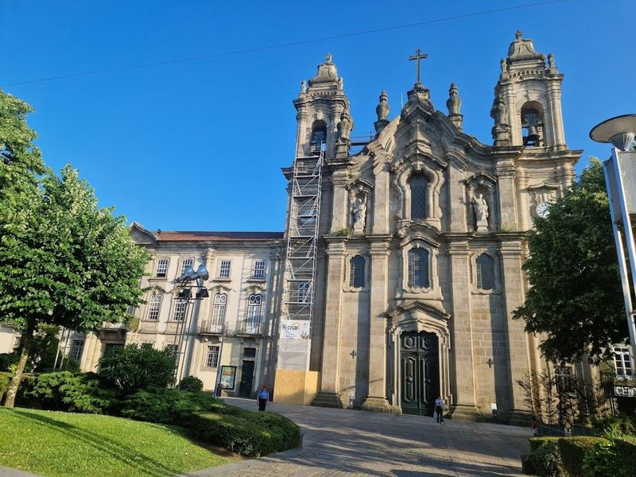
Congregados Basilica
The Congregados Basilica, also known as Igreja dos Congregados, is an 18th-century baroque basilica located in Braga, Portugal. Designed by architect Andre Soares, the basilica features a grand facade and interior adorned with elegant 19th-century design elements. The church is flanked by two bell towers and houses four granite statues representing biblical figures. travellers are drawn to the impressive staircase and are encouraged to wait at the top to hear the bells ring.
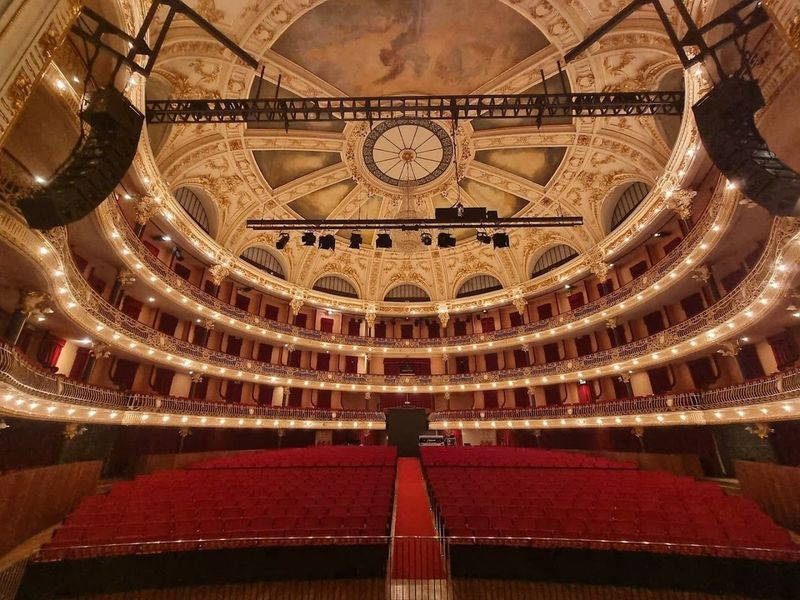
Theatro Circo
The historic center of Braga offers a delightful walk through churches, historical buildings like the Palacio do Raio, and the Theatro Circo. This theater, open since 1915 and recently renovated in 2006, is a source of pride for locals. It serves as a cultural hub hosting diverse events such as concerts, plays, dance performances, circus arts, educational programs, workshops, movie sessions, conferences, exhibitions and festivals.
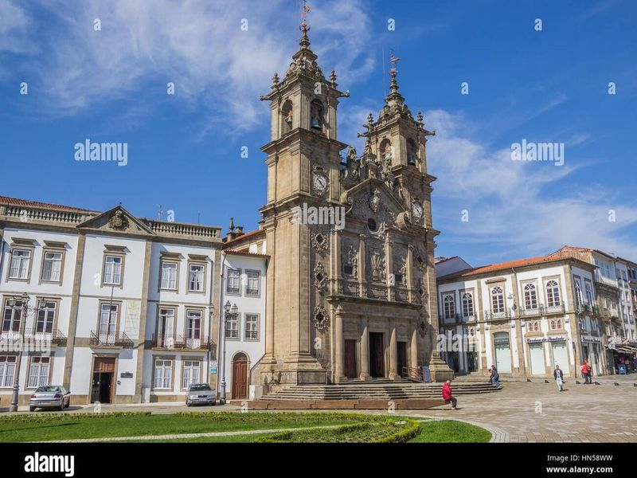
Holy Cross Church, Braga
The Holy Cross Church in Braga is an 18th-century marvel located on a beautiful square. The interior boasts intricate Baroque styles adorned with gold leaf, creating a sight. This Portuguese church features sculpted stone vaults and a beautiful organ, making it a attraction. As one of the oldest cathedrals in Portugal, the Braga Cathedral stands as a symbol of the city's religious heritage with its imposing Gothic appearance and elaborate decorations.
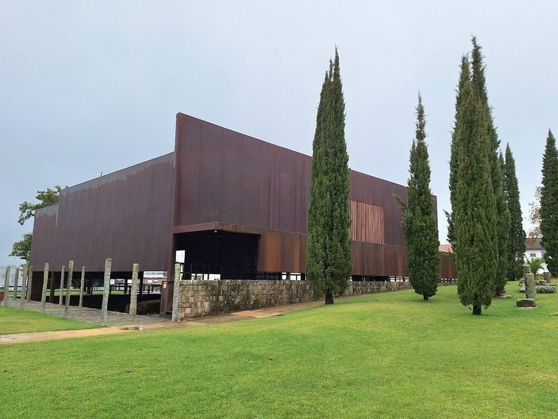
Roman Thermae of Maximinus
The Roman Thermae of Maximinus is an excavated public bath complex dating back to the 1st–3rd centuries BCE. While some travellers find the lack of well-marked signage and underwhelming excavation disappointing, others appreciate the spacious museum displaying numerous pre-Roman and Roman artifacts. The actual excavation features a small area with mosaic flooring, but it may not meet some travellers' expectations.
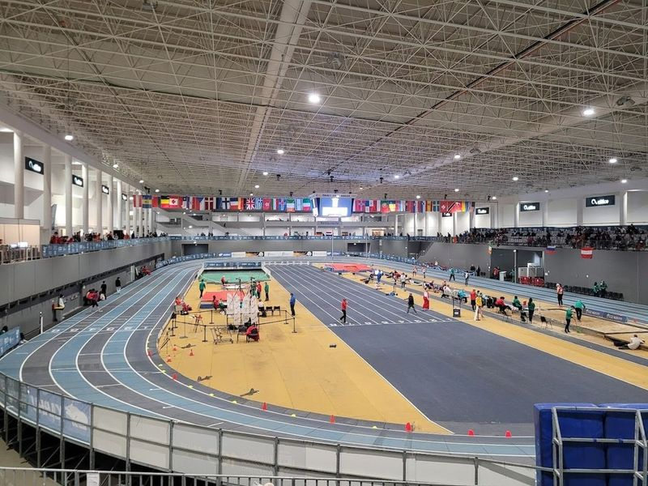
Forum Braga
Altice Forum Braga, established in 2018, is an institutional gallery housed in a distinctive building. It showcases the works of both Portuguese and international artists, with a focus on conceptualism and intellectual rigor. The venue also hosts various events such as the Dance World Cup 2023 and pet exhibitions, offering ample space for different activities. travellers appreciate its well-maintained facilities, including vending machines, onsite cafes and restaurants.
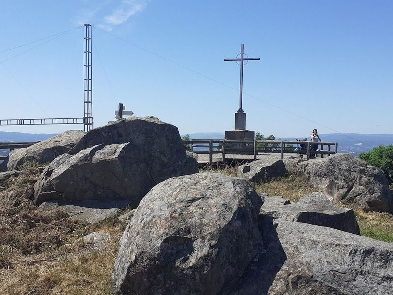
Parque do Monte do Picoto
Parque do Monte do Picoto is a destination that offers an incredible trail starting from its summit, where travellers can enjoy panoramic views of the Braga region. This park is perfect for various activities such as walking, running, and cycling, thanks to its well-established cycle route along the banks of the Este River.